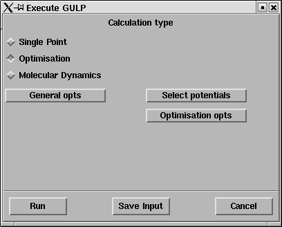
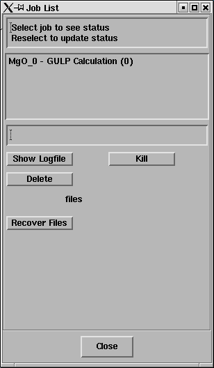
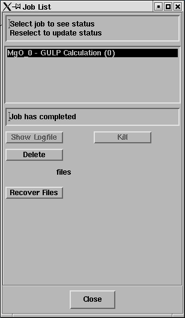

In this exercise the geometry of an MgO crystal will be optimised with respect to its internal energy.
The relaxed geometry corresponds to the structure MgO would adopt at zero pressure and zero temperature.
Load the structure in MgO.str
File->Load Model->from File
Cick on Browse
Select MgO.str
Select OK
Select OK
A model of MgO should have appeared in the DLV 3DView window.
Give the current model a suitable name. This will be used as the
label for this model in subsequent GULP simulations.
Edit -> Model -> Name
Change "Model_1(MgO.str)" to something suitable; say "MgO".
Note:
For the change to take effect you must press Return.
You'll see the name of the graphics window change to "DLV 3DView - MgO";
Now open the Execute GULP panel.
Calculate -> GULP -> Execute GULP
This panel will pop up;

As a first step GULP will be used to optimise the structure of MgO.
The symmetry of the crystal fixes the positions of the atoms within the cell and constrains the cell to be cubic. Thus there is only one structural parameter to optimize - the lattice constant a.
Firstly we must choose a force field or potential model to describe the interactions between the Mg and O ions.
Click on Select potentials
Select bush.lib on the GULP Potential parameters panel
Ensure that the Include Shells option is selected
Now you can run the optimization:
Select Optimization on the Execute GULP panel
Click on Run
The Job List panel will open automatically and look something like this;

Select the job and the status line should
report "Job has completed" - like this;

Click on Recover Files.
A window will open displaying the output from the GULP calculation (the LogFile).
It should look something like MgO_0.out
Take some time to read through the LogFile.
Note that:
GULP describes MgO using the primitive unit cell. Initially the cell vectors are (in Angstrom);0.0000 2.1056 2.1056
2.1056 0.0000 2.1056
2.1056 2.1056 0.0000This primitive cell corresponds to a crystallagraphic (conventional) cell with lattice constant 2.9778 Angstrom.
You can see the two cells using Display->Structure. Turn on draw lattice and select either Primitive or Conventional as the cell type.
In the LogFile GULP reports the structure and the interaction potentials that describe the Mg-O bonding and then computes the energy for configuration 1, i.e. the initial geometry. This energy is -40.99517 eV per unit cell.
GULP then performs a bulk optimisation which reduces the energy to -40.99536 eV/cell with a final lattice constant of 2.9741 Angstrom.
The change in geometry and energy gain in optimisation are very small. Clearly the initial geometry was very close to the minimum energy structure.
Note that DLV has automatically loaded the final structure and given it the name "Model_2(MgO_0.str)".